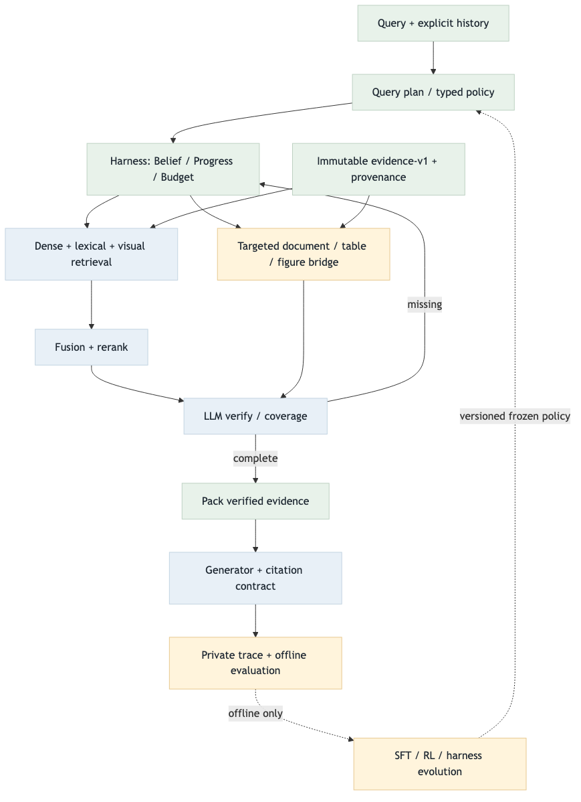

Evidence-Harness v1 릴레이샷
기존 단일 검색→생성 baseline을 보존하면서, 질문 슬롯·상태·검증·근거 보존을 추가한 opt-in 전환 기록입니다.
결론
멀티모달 임베딩은 이 전환의 선행 조건이 아닙니다. evidence/retrieval/controller/generation 경계를 먼저 고정했고, visual plan은 검증된 visual reader가 주입될 때까지 capability_gap으로 기권합니다. 따라서 현재 구현은 fact/compare/followup와 표·텍스트 provenance 경로를 검증하며, 실제 visual 검색 품질은 아직 측정하지 않습니다.
실험 완료 가정과 실측을 분리: 연구 문서상 선택안은 플랜의 가정입니다. 실제 dense/멀티모달 checkpoint·정책 학습·GCP 자원 실측은 이 브랜치에서 실행/승격하지 않았습니다.
오케스트레이션 변경
1
질문 계획현재 질문·history만으로 fact/compare/list/visual 슬롯 생성
2
검색·fusiondense/lexical/conditional visual port와 scope-safe RRF
3
검증 루프missing slot이면 targeted search/bridge 후 LLM verifier
4
생성검증·패킹된 근거만 citation 가능한 기존 Generator adapter

PNG: target flow. Current flow 원본은 Mermaid source로 보존했습니다. current PNG는 Chromium sandbox/실행 승인 제한으로 이번 릴레이에서 생성하지 못했습니다.
릴레이 배치 상태
| 배치 | 결과 | 검증/다음 조건 |
|---|---|---|
| EH0 | 완료 | 플랜·계약·TODO·target/current flow 고정 |
| EH1 | 완료 | immutable EvidenceStore, page→child/object bridge, source hash/provenance |
| EH2 | 완료 | BM25/dense/visual port, scope-safe RRF, reranker guard, context budget |
| EH3 | 완료 | bounded typed action loop, missing/contradiction/list completeness gate |
| EH4 | 준비 완료 | Generator adapter, private trace, offline diagnostic/CLI; live provider smoke는 승인/환경 대기 |
| EH5 | 보류 | 실제 checkpoint·hardware·승인 gold·holdout·resource 측정이 모두 있어야 shadow/promotion |
| EH6 | 준비 중 | offline trajectory exporter; SFT/RL은 외부 승인 reward/학습 산출물 없이는 실행하지 않음 |
검증 결과
40 + 36 + 39 + 36
evidence / retrieval / answering / orchestration 합성 테스트40 + 71
offline/gates·diagnostics + 기존 indexing 회귀PASS
repository safety (605 files scanned)0
private corpus/API/gold provider 호출전체 discovery는 786건 중 776 pass, 8 private artifact skip, 기존 evaluation tree의 2개 오류가 남았습니다. 새 경로의 scoped suite는 통과했습니다. 오류는 baseline artifact를 만들어 위장하지 않고 error log에 분리했습니다.
멀티모달 임베딩 판단
| 항목 | 현재 | 멀티모달 완료 후 |
|---|---|---|
| 인터페이스 | conditional visual lane·object bridge·crop/provenance 필드 고정 | provider가 같은 Retriever/Verifier 계약 구현 |
| 실행 | visual query는 capability_gap; OCR/caption을 pixel 근거로 승격하지 않음 | 검증된 reader와 checkpoint hash·hardware preflight 후 opt-in |
| 평가 | visual quality/score 미측정 | 고정 GPT-5.6 semantic judge와 frozen qrels로 별도 비교 |
산출물
다음 릴레이
- training exporter와 trajectory snapshot 검증을 마친다.
- synthetic adapter E2E와 baseline 관련 suite를 다시 확인한다.
- 멀티모달 checkpoint/reader가 준비되면 visual capability gate를 해제하기 전 hash·bbox·pixel fidelity를 검증한다.
- 승인 gold·sealed holdout·고정 judge·자원 측정이 모인 뒤에만 shadow/promotion을 검토한다.